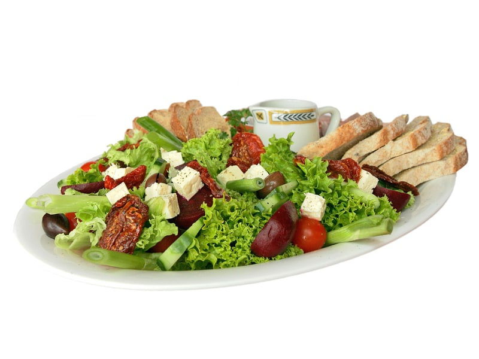

Polskie obiadki
Sałatka Waldorf
Sałatka Waldorf: 2 g białka, 145 kcal, 12 g węglowodanów i 10 g tłuszczu na 100 g. Kategoria: Polskie obiadki.
Kalorie145 kcalna 100 g
Białko / proteiny2 g
Węglowodany12 g
Tłuszcz10 g
Cena (szac.)~0,83 złza 100 g
Ceny zaktualizowano: maj 2026 (szacunek — ceny w popularnych supermarketach)
Porcja: miska (200g)
| Kalorie | 290 kcal |
|---|---|
| Białko | 4 g |
| Węglowodany | 24 g |
| Tłuszcz | 20 g |
| Cena (szac.) | ~1,65 zł |
Szczegółowe składniki odżywcze na 100 g
| Wartość energetyczna (kalorie) | 145 kcal |
|---|---|
| Białko (proteiny) | 2 g |
| Węglowodany | 12 g |
| Tłuszcz | 10 g |
| Tłuszcze nasycone | 2 g |
| Tłuszcze nienasycone | 8 g |
| Witaminy i minerały | Żelazo, Tiamina (B1), Potas |
| Współczynnik kcal / 1 g białka | 72.5 |
| Cena produktu (szac. za 100 g) | ~0,83 zł |
| Cena za 100 g białka (szac.) | ~41,25 zł |